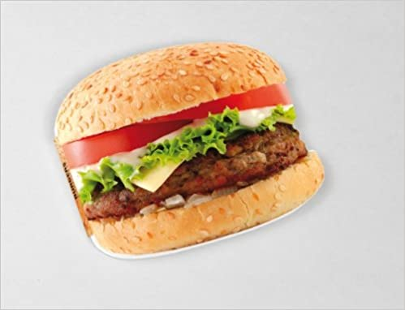
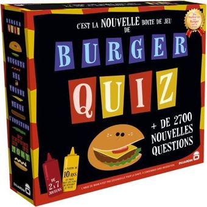
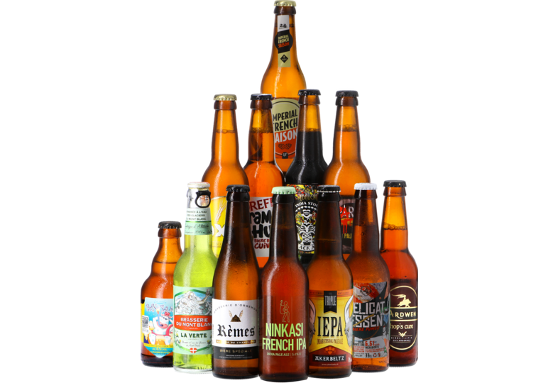

| Parce que tu es un fan inconditionnel de Burger ! qu'apparement tu te mets à la cuisine on a décidé de donner un coup de pouce à tes inspirations |
 |
| Pour garder un souvenir des jeux de société du midi mais rester dans le thème des burgers (et parce que faire déviner des chansons en chantant façon Chewbacca c'est drôle) |
 |
| Parce qu'on se limite souvent à ce qu'on connait et que c'est dommage de ne pas ouvrir ses horizons et que ça va très bien avec le burger (et qu'en plus c'est le set "cocorico" cocasse non ?)(j'en connais des très bonnes dans le lot !) |
 |
Parce que les gens sont généreux et qu'il nous reste un peu d'argent : on a des idées
- un kit avec tous les outils pour un barbecue
- un jeu (quelle plateforme ?)
Du coup pon préfère te laisser décider !
|
|